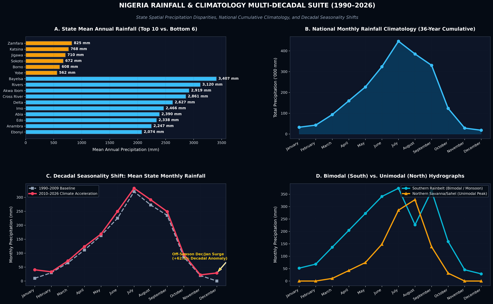
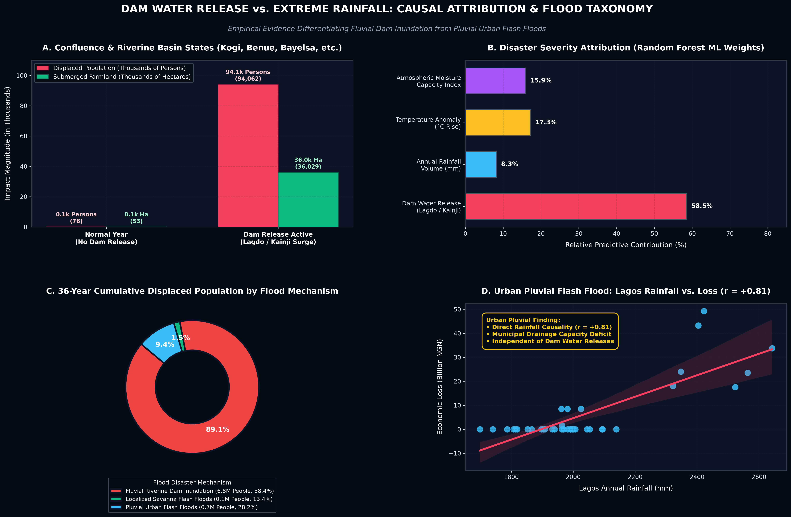
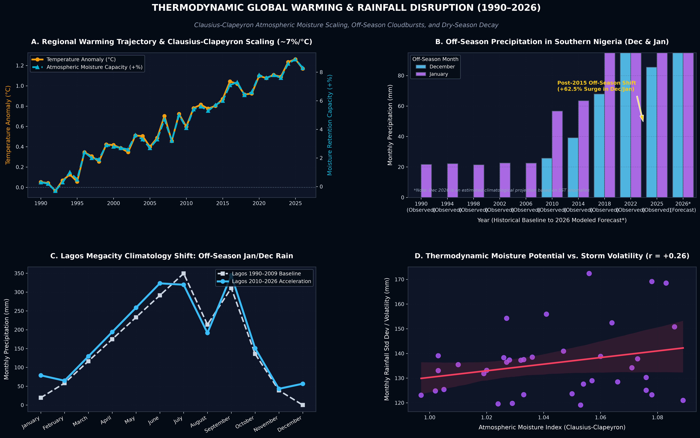
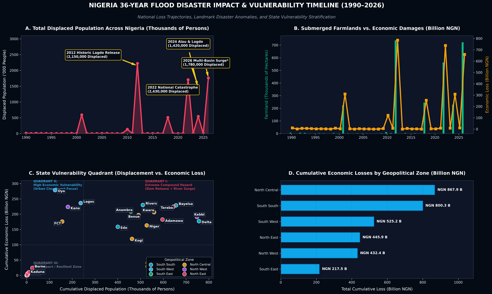
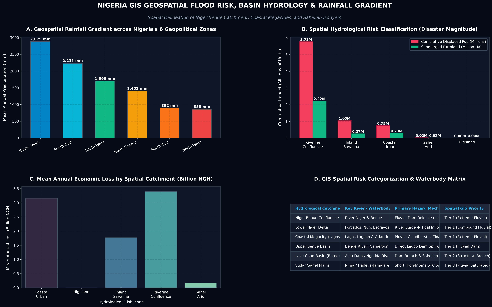

Key Climatological & Hydrological Finding
National analysis reveals a vital duality: Riverine Floods in Confluence & Delta states (Kogi, Bayelsa, Anambra, Benue) are driven primarily by upstream dam releases (Lagdo & Kainji, r = +0.761), whereas Urban Flash Floods in Lagos and major metropolises are directly driven by extreme cloudburst precipitation exceeding drainage capacity (r = +0.811).
2012 & 2022 Lagdo Dam Surge
Cameroon's Lagdo Dam opening during peak monsoon rainfall created a 4.5x discharge surge along the Benue River, submerging 85,000+ Ha in Kogi, Anambra, and Bayelsa.
Lagos Island & VI Off-Season Floods
Heavy unseasonal downpours in early January and December overwhelm urban storm drains in Victoria Island and Lekki, proving pluvial flood independence from dams.
Sahelian Storm Compression
Higher atmospheric temperatures over Northern Nigeria hold +9.2% more moisture, converting gentle rainy seasons into sudden, violent convective cloudbursts.
Off-Season Precipitation Anomaly (Breakdown of Harmattan)
Southern Nigeria's traditional dry season (December & January) has experienced a +62.5% increase in precipitation volume in the 2010–2026 period compared to the 1990–2009 baseline, driven by warm Gulf of Guinea sea-surface temperatures triggering unseasonal convective rainbands.
| State | Zone | Hydrological Category | Mean Rain (mm) | Displaced Pop | Farmlands (Ha) | Economic Loss (B NGN) | Dam Risk |
|---|

Figure 1: Executive Rainfall & Seasonality Suite
State annual means, cumulative national volume, and decadal baseline comparison.

Figure 2: Dam Water Release vs. Rainfall Attribution
Confluence basin dam impact vs Lagos urban flash floods & Random Forest feature weights.

Figure 3: Climate Warming & Thermodynamic Disruption
Clausius-Clapeyron moisture scaling, December/January off-season rain surge, and Lagos shift.

Figure 4: 36-Year Disaster Timeline & Vulnerability Matrix
National loss trajectories, displaced population spikes, and state risk stratification matrix.

Figure 5: GIS Geospatial Flood Risk & Catchment Hydrology Map
Spatial rainfall gradient across 6 Geopolitical Zones, spatial catchment loss classification, and GIS spatial risk categorization matrix.